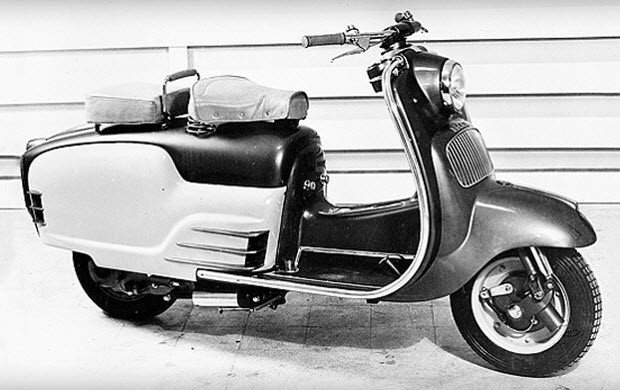

Мотоцикл
Ducati 750GT (1972–1974 год)
Мотоциклы Ducati выпускаются итальянской компанией, расположенной в городе Болонья. Ducati Motor Holding S.p.A. входит в состав немецкого автопроизводителя Audi AG. Фирма основана в 1926 году в Болонье Антонио Дукати и его тремя сыновьями — Адриано, Марчелло и Бруно. Первоначально компания занималась изготовлением радиотехники. В 30-х годах прошлого века дело процветало, поскольку в предвоенной Европе вырос спрос на рации, оптические прицелы, громкоговорители и рупоры. Предприятие было настолько успешным, что Дукати начали строить новый завод. Несмотря на разрушительные бомбардировки, производство поддерживали во время Второй мировой войны. Однако по ее окончании спрос на радиотехнику значительно снизился, и фирма была национализирована государством. Для загрузки производства руководство решило наладить выпуск транспортных средств. Выбор пал на небольшие и недорогие веломоторчики, спроектированные Альдо Фаринелли и продающиеся под маркой Siata. Фирма инженера не могла справиться с растущим спросом, поэтому по предложению правительства Фаринелли продает лицензию на изготовление моторов Ducati, а сам возвращается к любимому делу — созданию и тюнингу спорткаров. Так, на свет начали появляться веломобили под названием Cucciolo, что в переводе означает «щенок». Они комплектовались 50-кубовым двигателем и выгодно отличались от конкурентов хорошей тягой на низких оборотах, что было удобно при гористом рельефе Италии. Для загрузки производства руководство решило наладить выпуск транспортных средств. Выбор пал на небольшие и недорогие веломоторчики, спроектированные Альдо Фаринелли и продающиеся под маркой Siata. Фирма инженера не могла справиться с растущим спросом, поэтому по предложению правительства Фаринелли продает лицензию на изготовление моторов Ducati, а сам возвращается к любимому делу — созданию и тюнингу спорткаров. Так, на свет начали появляться веломобили под названием Cucciolo, что в переводе означает «щенок». Они комплектовались 50-кубовым двигателем и выгодно отличались от конкурентов хорошей тягой на низких оборотах, что было удобно при гористом рельефе Италии.